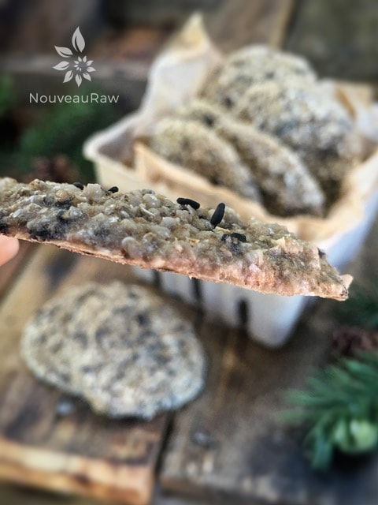

Italian Sesame Sunflour Crackers
~ raw, vegan, gluten-free, nut-free ~
Sunflower seeds are packed with vitamins, including vitamin B1 and B5, vitamin E and folate. And they also provide a healthy dose of copper, magnesium, selenium and phosphorous–important minerals.
Sunflowers grow throughout the year, and each sunflower consists of about 1000 to 2000 seeds and takes about 3 months to mature.
The flower itself, at the bud stage, exhibit a unique trait called heliotropism — the bud of the sunflower faces the sun at all times throughout the day, starting the day facing east, and ending it facing west.
I took the amazing health benefits of sunflower seeds and paired them with sesame seeds, creating a cracker that not only tastes great but it packed with some pretty amazing ingredients that will make you feel good.
Sesame seeds are a great source of calcium, zinc and several other vitamins and minerals. Just like the sunflower they also are a good source of copper, a mineral known to aid in pain relief from rheumatoid arthritis.
Sesame seeds may help reduce swelling and have additional anti-inflammatory benefits as well. A fun fact about these plants is that as the white or purple flowers mature into pods, containing edible seeds. when they ripen – they go pop – and scatter to the four winds. For this reason, most sesame seeds are harvested before they ripen.
These crackers have a subtle nutty flavor to them and are perfectly sturdy to pair with any nut cheese that is up for the challenge.
Yields 34 crackers
- 2 1/2 cups sunflour
- 1 cup flax flour
- 1/4 cup roasted sesame seeds
- 2 Tbsp dried onion flakes
- 2 Tbsp Italian seasoning
- 1/2 – 1 tsp Himalayan pink salt
- 1 tsp garlic powder
- 1 1/2 cup water
Preparation:
- In the food processor, fitted with the “S” blade, place the sunflour, flax flour, sesame seeds, onion flakes, Italian seasoning, salt, and garlic powder in the bowl and pulse together.
- Italian seasoning ~ Make your own with 6 tsp dried oregano + 3 tsp dried basil + 3 tsp dried thyme
- Dried onion flakes ~ Use 1-2 tsp onion powder or 1/2 cup fresh minced onion
- Sesame seeds ~ black sesame seeds are stronger in flavor. White unhulled sesame seeds are mild in flavor and slightly more bitter
- Add the water and process until thick batter forms.
- Using a 1 1/2 Tbsp cookie scoop, level off each scoop and place on the teflex sheet that comes with the dehydrator. Leave some space between them because you will flatten them when the tray is full.
- Using a drinking glass with a flat bottom, press the cracker flat. Wipe the glass bottom and dip in the water in between crackers so the dough doesn’t stick.
- Sprinkle sesame seeds and flax seeds on top of each cracker, lightly press them in.
- Dehydrate at 145 degrees (F) for 1 hour, then reduce to 115 degrees for 16 -/+ hours, until dry.
- Store in an airtight container for several weeks.
Culinary Explanations:
- Why do I start the dehydrator at 145 degrees (F)? Click (here) to learn the reason behind this.
- When working with fresh ingredients it is important to taste test as you build a recipe. Learn why (here).
- Don’t own a dehydrator? Learn how to use your oven (here). I do however truly believe that it is a worthwhile investment. Click (here) to learn what I use.

Trying to capture the thickness of the crackers for you.
© AmieSue.com